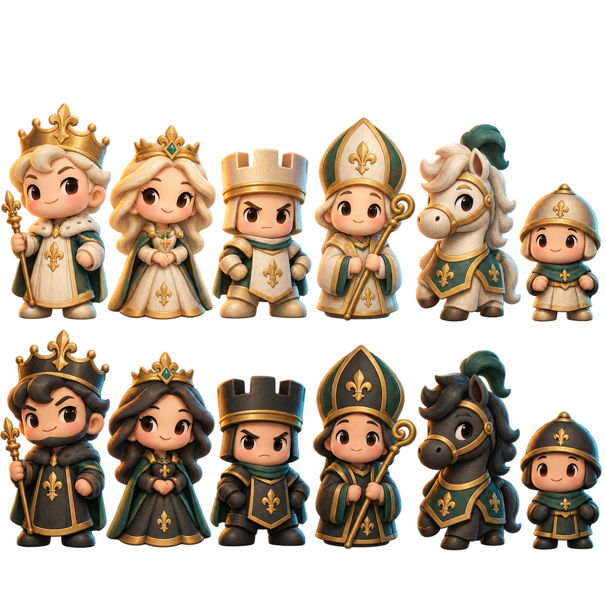

點一下你的棋子，看看它能去哪裡。先試著把中央的小兵向前走吧！
選填。沒有 API Key，也能完整遊玩所有對局。
金鑰只保留在本機；勾選記住才會存入瀏覽器。請求直接傳送至 Google，金鑰可在瀏覽器請求中查看，外洩風險由你自行保管。自動教學可能產生 API 費用。

① 點一下己方棋子，顯示合法走法。② 點圓圈移動、點菱形吃子；再次點選棋子或空白處可取消。③ 對手會自動回應。你可拖曳旋轉、滾輪縮放，隨時悔棋重新想想。
將軍時必須保護國王；無法解圍就是將死。小兵抵達底線時可選擇升變為皇后、城堡、主教或騎士。
選一位新夥伴，繼續你的冒險。